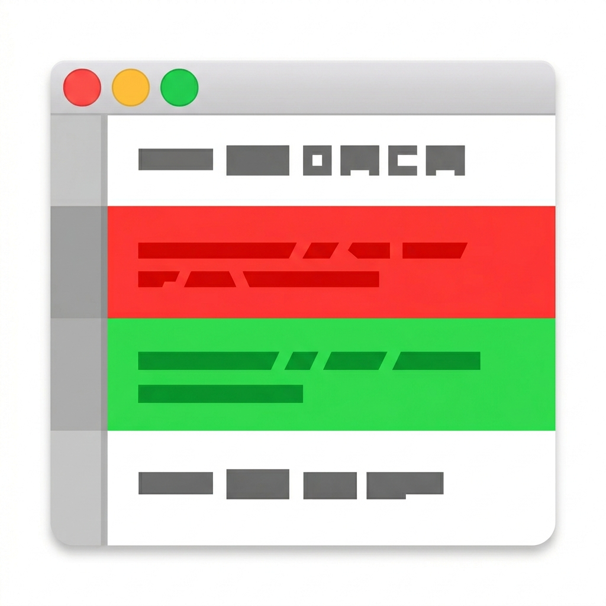

gvc (Git Visual Compare)
The ease of a visual diff viewer, the power of a command-line diffing tool.
gvc is a lightweight macOS GUI for viewing git diff output. Run gvc
where you’d normally run git diff — it opens a native window displaying a
formatted, scrollable, searchable diff. It was built as a modern replacement
for GitX’s --diff mode, which served gvc’s author
faithfully for over a decade but lacked dark mode, find, and active maintenance.

Why Another Diff Tool?
Most visual diff tools fall into one of two camps: GUI diff apps limited to looking at a single commit at a time, or advanced TUI diff tools supporting commit ranges and per-file filtering that are nevertheless trapped inside a small terminal window. gvc fills the gap — it’s a CLI-driven GUI. You type a CLI diff command — with as many bells and whistles as you want — and a full GUI window appears.
- Full
git diffpassthrough — anything you can pass togit diff, you can pass togvc. - Lightweight — not a heavy Electron app, not a TUI. Uses a platform-native WebView (WKWebView) to display diffs.
- Free and open source — no subscriptions, no accounts.
Features
- Light and dark mode
- Find (Cmd+F)
- Adjustable font size (Cmd+Plus / Cmd+Minus)
- Table of contents to jump to any file
- Collapsible file sections with expand/collapse all
Installation
Requires Python 3.14+ and a working git installation.
# Install pipx first
python3 -m pip install pipx
# Install gvc
pipx install gvc
After installation, gvc is available as a command in your shell.
Usage
gvc takes the same arguments as git diff:
gvc # Working tree changes (unstaged)
gvc --cached # Staged changes
gvc HEAD~1 HEAD # Compare two commits
gvc abc123 def456 # Compare any two refs
gvc HEAD~3 HEAD -- src/foo.py # Limit to specific files
gvc -w HEAD~1 HEAD # Ignore whitespace
gvc -U20 HEAD~1 HEAD # 20 lines of context
Each invocation opens a new window. The CLI returns immediately — your terminal is not blocked.
Keyboard Shortcuts
| Shortcut | Action |
|---|---|
| Cmd+F | Open find bar |
| Cmd+G | Find next |
| Shift+Cmd+G | Find previous |
| Cmd+Plus | Increase font size |
| Cmd+Minus | Decrease font size |
| Cmd+W | Close window |
| Cmd+Q | Quit application |